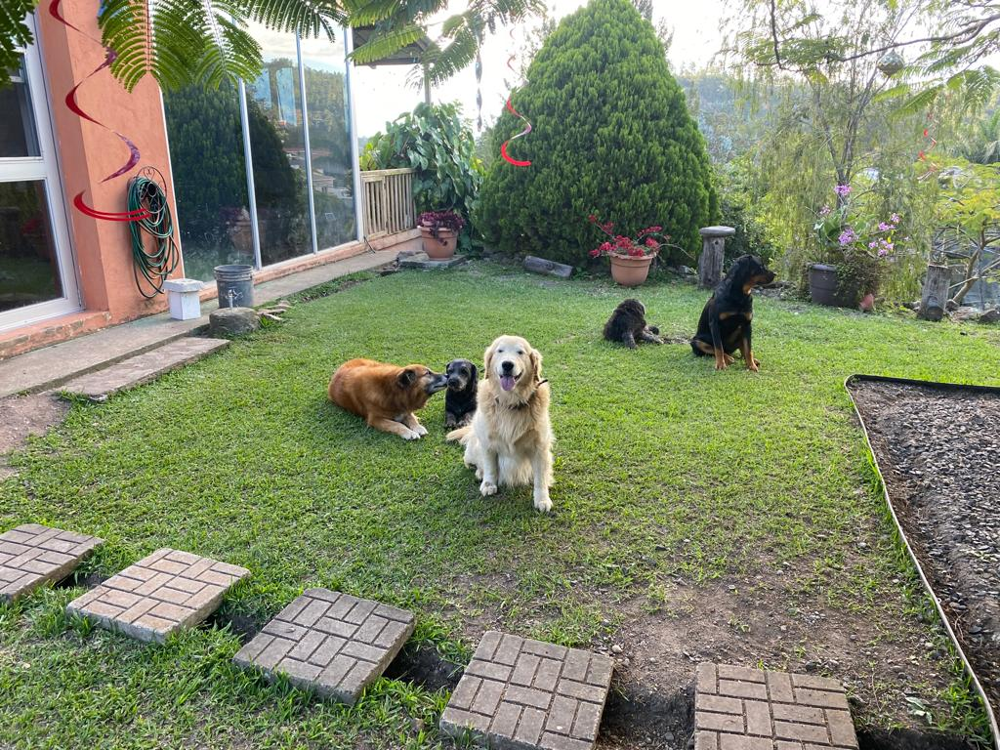
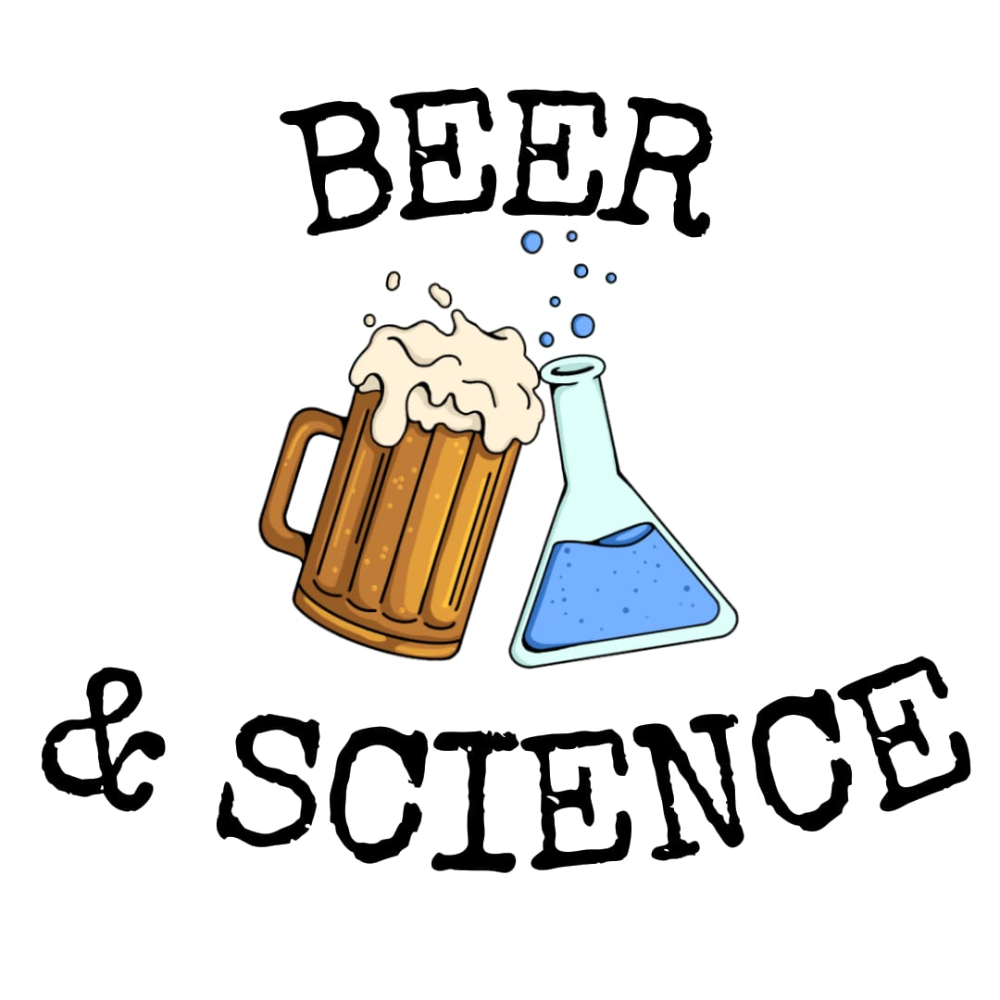
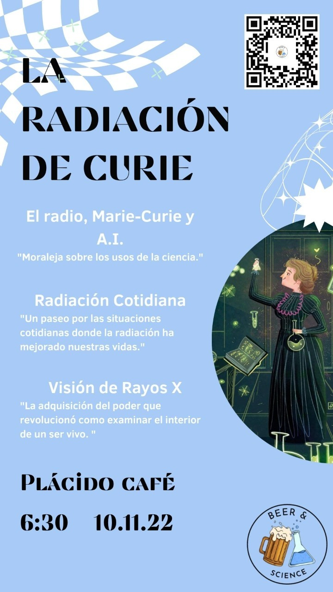

A story of the my last October
Hello everyone! My name is Asael Alonzo Matamoros, and I just came back home (Honduras). After 2 years of living in Finland, I got depression, unfinished business, and a will to write about statistics (and obviously about the stupid Colombian telenovela I call my life).
It has been a month since I returned. The adaptation has been a shit show, but everything is not lost. Some things turned out to be good or even enjoyable. For example, I am attending three weddings, all of which are for people from the same group of friends.. Yes! I am the “single one of all my friends, and despite of this minor detail, I am happy to celebrate these significant events with them. And obviously, I can’t forget that now I live with five incredible cutenesses that are always happy to see me. Please check them out in the following picture.

So, now I want to answer the critical question: What the fuck is going on with my life?! Well, I don’t know, but who really does? A good answer might be that I am recovering from some exhausting experiences that came to happen this year. Out of the drama, I want to share three exciting projects with you (Yes, you! The person who might be reading this, and I gotta say I love you!).
I am finishing my research in Bayesian ARIMA models for time-series analysis.
Monchys, Juan and I created a meeting group called “Beer and Science,” where we do nerd talks about stories, research, and science.
I have a Google Season of Docs contract with ArviZ.
I can’t talk about my research now, but let’s talk about Beer; after all, it is more fun.
Beer and Science
One of my guilty pleasures is watching way too many YouTube videos. I love those informative (nerdy) vlogs in which people talk about their research, technology, or field of knowledge. Let’s be honest; it is fun to watch thirteen-minute videos explaining how Einstein came up with the relativity theory idea. And if not, I like it anyway, and IDGAF about your opinion!
The project’s central idea is to share some content about what we are doing (We try to do research, but we suck at it) and motivate others in our work or at least to read a book. Not to forget that I am a narcissist fuck, and I love to hear public praise like a stupid diva (a considerable motivation for myself). So, after a minimal amount of consideration, I contacted my friend Monchys who has vast experience drinking (I mean researching) and discussed the idea with him. Look at us now! We got some shit done, and eureka! “Beer and science” was born!

Our first event was “La radiación de Curie,” where we wanted to talk about radiation, its impact on society, radium, and the consequences of misusing technology. Juan gave a fantastic talk about the mechanism of radiation, illustrating the work of some extraordinary scientists in the field. Monchys gave some examples where radiation is applied in real-life applications. And I talked about the misuse of radium and its consequences for society. I connected the story with Machine Learning and discussed some cases where artificial intelligence has been misused. Yes! You got me in a box! I love to shit talk about ML.

The event was a relative success (let’s agree that 22 persons attending the event is a success), and we decided to make a second round. I hope we can agree on the following topic (spoiler alert, the next topic might be “Intelligence”). You are all invited, and I hope to see you around so we can have a funny nerd talk about science (and, of course, get drunk together).
Seriously! If you are interested in our event, please subscribe for free here.